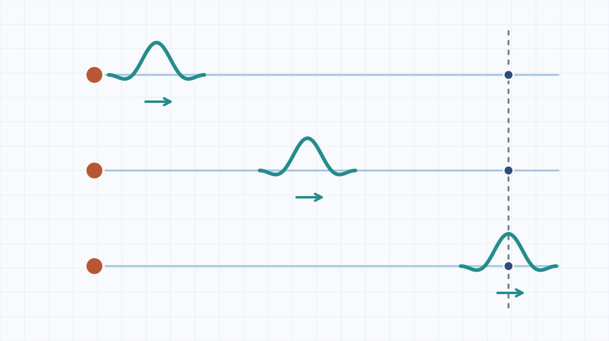
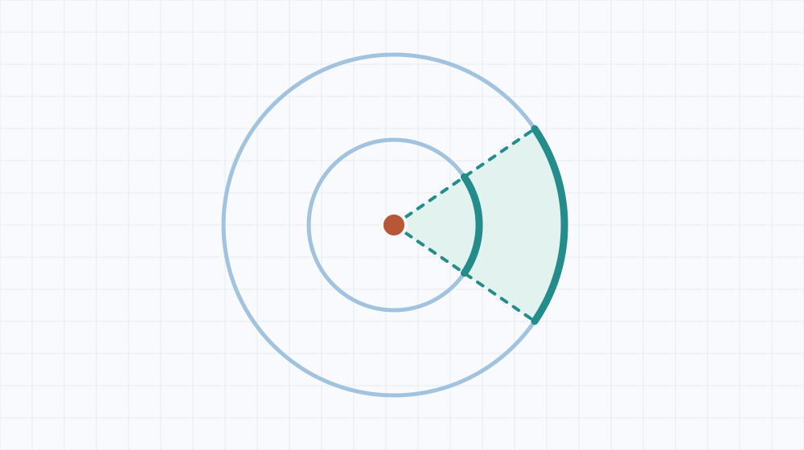

Τι είναι η ακτινοβολία;
Μάθε για τις επιπτώσεις του ορίου ταχύτητας διάδοσης της πληροφορίας στο σύμπαν.
Συνέχισε το διάβασμα για να μάθεις…
- Πώς ένα φεγγάρι του Δία μάς έδειξε ότι το φως χρειάζεται χρόνο για να φτάσει σε εμάς.
- Πώς συνδέθηκαν ο ηλεκτρισμός, ο μαγνητισμός και το φως.
- Πώς ένα φορτίο μπορεί να στείλει έναν παλμό που ταξιδεύει ακόμη κι όταν εκείνο έχει πια σταματήσει.
Πόσο γρήγορα μαθαίνουμε ότι συνέβη κάτι;
Ας πούμε ότι βρισκόμαστε σε δύο απέναντι μπαλκόνια νύχτα και θέλουμε να στείλουμε ο ένας στον άλλο ένα σήμα. Αν σου φωνάξω, ο αέρας θα μεταφέρει τη φωνή μου. Αν ανάψω έναν φακό, θα δεις τη λάμψη σχεδόν την ίδια στιγμή που πατάω τον διακόπτη. Τόσο κοντά, μάλιστα, που αν προσπαθήσουμε να χρονομετρήσουμε τη διαφορά, μάλλον θα καταλήξουμε να μετράμε πόσο γρήγορα πατάμε εμείς τα κουμπιά του χρονομέτρου.
Τώρα ας μετακινήσουμε το ένα μπαλκόνι λίγο πιο μακριά. Ας πούμε, για την ακρίβεια, ότι ο φακός είναι στην επιφάνεια της Σελήνης (και αρκετά ισχυρός για να τον διακρίνουμε από τη Γη). Η λάμψη θα χρειαστεί περίπου 1,3 δευτερόλεπτα για να φτάσει. Αν ο άνθρωπος στη Σελήνη ανάψει και σβήσει αμέσως τον φακό, όταν εμείς δούμε το φως εκείνος θα έχει ήδη σβήσει τον φακό. Πού βρισκόταν λοιπόν η λάμψη στο μεταξύ;
Η ιδέα ότι το φως ταξιδεύει μας φαίνεται τόσο αυτονόητη σήμερα που ίσως παραξενεύεσαι γιατί επιμένω σε αυτό το ερώτημα. Σκέψου όμως τι θα σήμαινε για κάτι που δεν βλέπουμε με τα μάτια μας. Ένα ηλεκτρικό φορτίο, για παράδειγμα, ασκεί δύναμη σ’ ένα άλλο φορτίο απέναντί του. Αν το πρώτο μετακινηθεί, πότε θα αλλάξει η δύναμη που δέχεται το δεύτερο; Θα χρειαστεί κι εκείνο να περιμένει; Ας αφήσουμε για λίγο τα φορτία κι ας δούμε πρώτα πώς μάθαμε ότι ακόμη και το φως αργεί.
Ένα ρολόι που βρίσκεται στον Δία
Στα τέλη του 17ου αιώνα, ο Δανός αστρονόμος Ole Rømer παρατηρούσε την Ιώ, ένα από τα φεγγάρια του Δία. Κάθε φορά που η Ιώ περνά μέσα από τη σκιά του Δία, παύει για λίγο να φαίνεται και ύστερα ξαναβγαίνει στο φως. Αν σημειώσεις πότε εμφανίζεται μέσα στο τηλεσκόπιο και περιμένεις την επόμενη εμφάνιση, έχεις κάτι σαν ρολόι που χτυπάει μία φορά κάθε περίπου 42 ώρες και μισή. Για αστρονομικό ρολόι, βέβαια, είναι κάπως εκνευριστικό να βιάζεσαι και να πρέπει να περιμένεις μέχρι μεθαύριο!
Όταν όμως συνέκριναν τις προβλέψεις με τις παρατηρήσεις αρκετών μηνών, κάτι δεν πήγαινε καλά. Καθώς η Γη απομακρυνόταν από τον Δία, οι εμφανίσεις της Ιούς έφταναν όλο και πιο αργά σε σχέση με την πρόβλεψη. Όταν η Γη πλησίαζε, συνέβαινε το αντίθετο. Θα μπορούσε βέβαια το φεγγάρι να είχε ένα περίεργο πρόγραμμα. Γιατί όμως αυτό το πρόγραμμα να συμβαδίζει με την κίνηση της Γης, ενός πλανήτη τόσο μακριά του;
Ο Rømer εξήγησε το 1676 πως η διαφορά μπορούσε να οφείλεται στον χρόνο που χρειάζεται το φως για να ταξιδέψει. Φαντάσου ότι στέλνεις ένα γράμμα κάθε Δευτέρα και στο μεταξύ ο παραλήπτης μετακομίζει όλο και πιο μακριά. Τα γράμματα μπορεί να φεύγουν στην ώρα τους και παρ’ όλα αυτά το καθένα να θέλει λίγο παραπάνω χρόνο από το προηγούμενο για να φτάσει. Κάτι ανάλογο συνέβαινε με τις εμφανίσεις της Ιούς. Το τηλεσκόπιο έδειχνε την ώρα που η είδηση έφτανε στη Γη, ενώ οι αστρονόμοι ήθελαν να μάθουν πότε είχε συμβεί το γεγονός στον Δία.
Το εντυπωσιακό είναι ότι η καθυστέρηση μιας μόνο περιφοράς ήταν μικρή. Με κάθε επόμενη περιφορά όμως το φως είχε λίγο παραπάνω δρόμο να καλύψει και η διαφορά γινόταν πια μετρήσιμη. Στην αυλή του σπιτιού μας δεν έχουμε αυτή την πολυτέλεια. Το φως διανύει περίπου 300.000 χιλιόμετρα σε ένα δευτερόλεπτο στο κενό. Για να μετρήσεις εύκολα την καθυστέρηση, χρειάζεσαι είτε ένα εξαιρετικά γρήγορο χρονόμετρο είτε, όπως αποδείχθηκε, λίγη υπομονή κι έναν Δία.
Τι δουλειά έχει το φως με έναν μαγνήτη;
Για αρκετό καιρό, ο ηλεκτρισμός, ο μαγνητισμός και το φως έμοιαζαν με τρία χωριστά θέματα. Το ένα είχε να κάνει με φορτισμένα αντικείμενα και ρεύματα, το άλλο με πυξίδες και μαγνήτες, το τρίτο με καθρέφτες και φακούς. Μια πυξίδα όμως εκτρέπεται κοντά σ’ ένα καλώδιο που διαρρέεται από ρεύμα. Και αν κουνήσεις έναν μαγνήτη κοντά σε ένα πηνίο, μπορείς να κάνεις ρεύμα να περάσει στο κύκλωμά του. Υπήρχε λοιπόν λόγος να υποψιαστεί κανείς ότι ο ηλεκτρισμός και ο μαγνητισμός ήταν συγγενείς. Αλλά το φως πώς μπλέχτηκε στην ιστορία;
Στη δεκαετία του 1860, ο Σκωτσέζος φυσικός James Clerk Maxwell έβαλε σε ενιαία μορφή τους νόμους για τα ηλεκτρικά και τα μαγνητικά πεδία. Το παράξενο ήταν κάτι που μπορούσαν να κάνουν οι εξισώσεις του ακόμη και σε χώρο όπου δεν υπήρχε κανένα φορτίο ή ρεύμα. Επέτρεπαν σ’ ένα ηλεκτρικό και σ’ ένα μαγνητικό πεδίο που μεταβάλλονται μαζί να ταξιδεύουν ως κύμα. Αν άφηνες μια τέτοια διαταραχή να φύγει από την πηγή της, οι εξισώσεις προέβλεπαν και την ταχύτητα με την οποία θα πήγαινε.
Η ταχύτητα αυτή έβγαινε από σταθερές του ηλεκτρισμού και του μαγνητισμού. Κι όμως, η τιμή της ήταν πολύ κοντά στην ταχύτητα που άλλοι ερευνητές είχαν ήδη μετρήσει για το φως, με καθρέφτες και οδοντωτούς τροχούς. Ο Maxwell πρότεινε τότε πως αυτή η σύμπτωση είχε μια σχεδόν απίστευτα απλή εξήγηση. Το φως είναι ηλεκτρομαγνητικό κύμα. Δηλαδή κάτι που μπορούμε να παρατηρήσουμε με τα μάτια μας και κάτι που περιγράφουμε με εξισώσεις για ηλεκτρικές και μαγνητικές δυνάμεις ήταν τελικά το ίδιο φαινόμενο.
Ένας σπινθήρας στην άλλη άκρη του δωματίου
Ωραία ιδέα, αλλά είχε και μια συνέπεια που μπορούσε κανείς να δοκιμάσει. Αν οι εξισώσεις είχαν δίκιο, θα έπρεπε να μπορούμε να φτιάξουμε ηλεκτρομαγνητικά κύματα με μια ηλεκτρική συσκευή και να τα ανιχνεύσουμε σε κάποιο άλλο σημείο του δωματίου. Στα τέλη της δεκαετίας του 1880 ο Heinrich Hertz έκανε ακριβώς αυτό. Στη μία άκρη είχε μια διάταξη όπου ένας σπινθήρας συνοδευόταν από γρήγορη ταλάντωση του ηλεκτρικού φορτίου. Λίγο παραπέρα είχε έναν μεταλλικό βρόχο με ένα μικρό κενό. Όταν λειτουργούσε η πηγή, στο κενό του βρόχου φαινόταν κι ένας δεύτερος, πολύ μικρότερος σπινθήρας.
Το θέμα βέβαια δεν ήταν απλώς ότι δύο πράγματα έβγαζαν σπινθήρες την ίδια ώρα. Ο Hertz μπορούσε να αλλάξει τη θέση και τον προσανατολισμό του δέκτη και να δει πώς άλλαζε η ένταση του σπινθήρα. Έδειξε ακόμη ότι τα κύματα ανακλώνται σε μεταλλικές επιφάνειες. Το προσπίπτον και το ανακλώμενο κύμα μπορούσαν μάλιστα να συνδυαστούν και να σχηματίσουν περιοχές όπου η ένδειξη ήταν ισχυρή και άλλες όπου ήταν πολύ ασθενής. Μετακινώντας τον δέκτη έβλεπε έτσι κάτι από το σχήμα ενός κύματος που τα μάτια του δεν μπορούσαν να δουν.
Βρισκόμαστε ήδη πολύ κοντά στην ιδέα μιας κεραίας που εκπέμπει και μιας άλλης που λαμβάνει. Αυτό που φτάνει στον δέκτη είναι ένα πεδίο που μπορεί να ασκήσει δύναμη στα δικά του φορτία. Για να παρακολουθήσουμε όμως το ταξίδι του λεπτό προς λεπτό (ή μάλλον δισεκατομμυριοστό προς δισεκατομμυριοστό του δευτερολέπτου), ας απλοποιήσουμε τη διάταξη. Θα κρατήσουμε μόνο ένα φορτίο και έναν ανιχνευτή.
Ποια στιγμή της πηγής βλέπει ο ανιχνευτής;
Ας βάλουμε ένα θετικό φορτίο στο κέντρο ενός τεράστιου άδειου δωματίου και έναν ανιχνευτή στον τοίχο. Όσο το φορτίο μένει ακίνητο, ο ανιχνευτής μετρά το ίδιο ηλεκτρικό πεδίο. Τώρα μετακινούμε το φορτίο λίγο προς τα πάνω και το αφήνουμε πάλι ακίνητο. Αν αλλάξει θέση το φορτίο, θα αλλάξει τελικά και η κατεύθυνση του πεδίου στον τοίχο. Τη στιγμή όμως που αρχίζει η κίνηση, εκεί πέρα το πεδίο έχει ακόμη την τιμή που είχε πριν. Η αλλαγή προχωρά από σημείο σε σημείο με την ταχύτητα του φωτός.

Πόσο πίσω πρέπει να κοιτάξουμε για να βρούμε την κατάσταση του φορτίου που επηρεάζει τη μέτρηση τώρα; Θα έλεγε κανείς ότι αρκεί να μετρήσουμε πόσο απέχει τώρα το φορτίο από τον ανιχνευτή και να διαιρέσουμε με την ταχύτητα του φωτός. Μόνο που όσο η μεταβολή ταξίδευε, το φορτίο μπορεί να είχε κάνει μερικά βήματα ακόμη. Στην απόσταση που μας ενδιαφέρει το ένα άκρο είναι ο ανιχνευτής και το άλλο είναι η θέση στην οποία ήταν το φορτίο όταν ξεκίνησε η μεταβολή που μετράμε.
Αυτή τη στιγμή την ονομάζουμε καθυστερημένο χρόνο και τη γράφουμε tᵣ. Αν t είναι η στιγμή της μέτρησης και R(tᵣ) η απόσταση από την παλιότερη θέση του φορτίου μέχρι τον ανιχνευτή, τότε ο χρόνος του ταξιδιού είναι
Με άλλα λόγια, ψάχνουμε μια παλιότερη θέση από την οποία ένα σήμα, αν έφευγε τότε με ταχύτητα c, θα έφτανε ακριβώς τώρα. Σε μια δεδομένη στιγμή, δύο ανιχνευτές σε διαφορετικά σημεία μπορούν να μετρούν αποτελέσματα από διαφορετικές στιγμές της κίνησης. Ένας χάρτης του πεδίου, ακόμη κι αν τον παγώσουμε σ’ ένα στιγμιότυπο, μπορεί έτσι να περιέχει ολόκληρα κομμάτια από την ιστορία του φορτίου.
Αρκεί να κινείται το φορτίο;
Έχουμε λοιπόν μια μεταβολή που ταξιδεύει. Αυτό αρκεί για να την ονομάσουμε ακτινοβολία; Φαντάσου ότι βρίσκεσαι δίπλα σ’ ένα φορτίο που περνάει με σταθερή ταχύτητα. Καθώς σε πλησιάζει και ύστερα απομακρύνεται, θα μετρήσεις διαφορετική ένταση και διεύθυνση του πεδίου. Ήταν αναμενόμενο. Ακόμη και σε μια σειρά από στατικές εικόνες, διαφορετική θέση του φορτίου θα σήμαινε διαφορετικό πεδίο γύρω σου. Αν όμως το φορτίο κινούνταν με την ίδια ταχύτητα και στην ίδια ευθεία για πάντα, δεν θα εξέπεμπε ακτινοβολία.
Στο πείραμά μας, αντιθέτως, το φορτίο ξεκινά από στάση, αποκτά ταχύτητα και φρενάρει για να σταματήσει. Και στο ξεκίνημα και στο φρενάρισμα αλλάζει η ταχύτητά του. Έχει δηλαδή επιτάχυνση και στις δύο περιπτώσεις (στη φυσική, και το φρενάρισμα μετράει ως επιτάχυνση). Το ίδιο θα ίσχυε αν έστριβε χωρίς να αλλάξει πόσο γρήγορα κινείται. Η ταχύτητα έχει και διεύθυνση, οπότε ακόμη και μια αλλαγή διεύθυνσης μετράει.
Το ηλεκτρικό πεδίο ενός κινούμενου σημειακού φορτίου μπορεί να χωριστεί σε δύο μέρη. Το ένα, που συνήθως λέγεται συνιστώσα ταχύτητας, υπάρχει ακόμη κι όταν η επιτάχυνση είναι μηδέν. Είναι αυτό που δίνει και το γνώριμο πεδίο Coulomb αν ακινητοποιήσουμε το φορτίο. Το άλλο εξαρτάται από την επιτάχυνσή του και το λέμε συνιστώσα ακτινοβολίας. Για τη μέτρησή μας, και στις δύο περιπτώσεις κοιτάζουμε την κίνηση στον καθυστερημένο χρόνο. Μπορεί λοιπόν το φορτίο να έχει ήδη σταματήσει και ο ανιχνευτής να καταγράφει ακόμη ακτινοβολία από τότε που φρέναρε.
Έχει σημασία ακόμη και από πού κοιτάζουμε. Ένα φορτίο που ταλαντώνεται πάνω και κάτω σε μια ευθεία στέλνει προς τα πλάγια ισχυρότερο σήμα απ’ ό,τι προς τα πάνω ή προς τα κάτω. Πάνω στην ίδια την ευθεία της κίνησης η συνιστώσα ακτινοβολίας μηδενίζεται. Γι’ αυτό, όταν θα μετακινήσουμε το φορτίο στο εργαστήριο, θα βάλουμε τον ανιχνευτή αρχικά στο πλάι. Εκεί είναι ευκολότερο να ξεχωρίσουμε τι συνέβη.
Γιατί μπορούμε να το ανιχνεύσουμε τόσο μακριά;
Ας φανταστούμε δύο ανιχνευτές στον ίδιο δρόμο του παλμού. Ο δεύτερος βρίσκεται δύο φορές πιο μακριά από τη θέση εκπομπής. Συγκρίνουμε τις μετρήσεις τους καθώς περνά από τον καθένα το ίδιο κομμάτι του παλμού, άρα σε διαφορετικές χρονικές στιγμές. Η συνιστώσα ταχύτητας εξασθενεί με το αντίστροφο του τετραγώνου της απόστασης, όπως το πεδίο Coulomb. Στον δεύτερο ανιχνευτή μετράμε το ένα τέταρτο. Το ηλεκτρικό πεδίο της ακτινοβολίας, από την άλλη, εξασθενεί ανάλογα με το αντίστροφο της απόστασης. Στον δεύτερο ανιχνευτή αυτό έχει πέσει μόνο στο μισό.
Διπλασίασε άλλη μια φορά την απόσταση και η μία συνιστώσα πέφτει πάλι στο ένα τέταρτο ενώ η άλλη πάλι στο μισό. Βλέπεις ποια θα επικρατήσει έπειτα από αρκετούς διπλασιασμούς; Γι’ αυτό μακριά από μια πηγή που εκπέμπει, αν μετρήσουμε σε μια κατεύθυνση όπου φτάνει η ακτινοβολία της, το πεδίο που καταγράφουμε οφείλεται κυρίως σε αυτήν. Η διαφορά είναι εύκολο να χαθεί αν κοιτάς μόνο δίπλα στο φορτίο, όπου μπορεί να υπερισχύει η συνιστώσα ταχύτητας.
Και η ενέργεια; Η ένταση της ακτινοβολίας, δηλαδή η ενέργεια που περνά ανά δευτερόλεπτο από μια μονάδα επιφάνειας, είναι ανάλογη με το τετράγωνο του πλάτους του ηλεκτρικού κύματος. Μισό πλάτος σημαίνει ένα τέταρτο της έντασης. Μα αν σχεδιάσουμε μια σφαίρα γύρω από τη θέση εκπομπής και μετά μια δεύτερη με διπλάσια ακτίνα, η επιφάνεια της δεύτερης είναι τετραπλάσια. Φαντάσου ένα κομμάτι της μικρής σφαίρας και το αντίστοιχό του στη μεγάλη, ακριβώς στην ίδια κατεύθυνση. Η ενέργεια του παλμού που περνά από εκεί απλώνεται τώρα σε τέσσερις φορές μεγαλύτερη επιφάνεια. Έτσι η ακτινοβολία μπορεί να μεταφέρει ενέργεια πολύ μακριά, παρόλο που σε κάθε σημείο γίνεται όλο και πιο δύσκολο να την ανιχνεύσουμε.

Και αν το φορτίο πηγαινοέρχεται;
Μέχρι στιγμής μετακινήσαμε το φορτίο μια φορά και το αφήσαμε στην ησυχία του. Αυτό δίνει μια σύντομη διαταραχή, έναν παλμό. Αν όμως αναγκάσουμε το φορτίο να πηγαινοέρχεται με σταθερό ρυθμό, θα στέλνει επαναλαμβανόμενες μεταβολές στο πεδίο. Είναι σαν να κουνάς ρυθμικά την άκρη ενός σχοινιού. Όσο κουνάς το χέρι σου, όλο και περισσότερες κορυφές ξεκινούν να ταξιδεύουν. Αν σταματήσεις, οι κορυφές που έχουν ήδη φύγει συνεχίζουν τον δρόμο τους.
Το πόσες ταλαντώσεις γίνονται σε ένα δευτερόλεπτο είναι η συχνότητα f. Η απόσταση από μια κορυφή του κύματος μέχρι την επόμενη είναι το μήκος κύματος λ. Σκέψου τι συμβαίνει στο κενό ανάμεσα σε δύο διαδοχικές κορυφές. Όσο περιμένουμε να ξεκινήσει η δεύτερη, η πρώτη έχει διανύσει απόσταση ίση με την ταχύτητα του φωτός επί τον χρόνο που μεσολάβησε. Αυτός ο χρόνος είναι 1/f. Άρα για το μήκος κύματος βρίσκουμε
Αν κάνουμε την πηγή να ταλαντώνεται δύο φορές πιο γρήγορα, η μία κορυφή έχει στη διάθεσή της τον μισό χρόνο πριν ξεκινήσει η επόμενη. Οι κορυφές λοιπόν μαζεύονται πιο κοντά, ενώ η καθεμιά εξακολουθεί να ταξιδεύει με την ίδια ταχύτητα. Στο εργαστήριο η διαφορά φαίνεται αμέσως. Άλλαξε τη συχνότητα και δες πόσο αλλάζει το σχέδιο που πιάνει το κύμα πάνω στον καμβά.
Διαδραστικό Εργαστήριο
Στο εργαστήριο που ακολουθεί θα βρεις ένα φορτίο που μπορείς να μετακινήσεις και έναν ανιχνευτή που μπορείς να αφήσεις σε όποιο σημείο σε ενδιαφέρει. Το λευκό αστεράκι είναι το φορτίο και ο γαλαζοπράσινος δείκτης είναι ο ανιχνευτής. Τα πορτοκαλί βέλη δείχνουν το ηλεκτρικό πεδίο. Το μαγνητικό πεδίο έχει και αυτό διεύθυνση, αλλά στο επίπεδο που παρατηρούμε είναι κάθετο στην οθόνη. Οι μπλε τελείες δείχνουν προς εμάς και οι σταυροί προς τα μέσα (σαν τη μύτη και τα φτερά ενός βέλους που βλέπουμε από μπροστά ή από πίσω).
Δοκίμασε τη «Χειροκίνητη» κίνηση για να δεις τι συμβαίνει όταν μετακινείς εσύ το φορτίο. Με τις επιλογές «Παλμός» και «Κύμα» μπορείς να επαναλάβεις τη δοκιμή με την ίδια κίνηση της πηγής όσες φορές θέλεις. Αν ενεργοποιήσεις την «Ακτίνα από τη θέση εκπομπής», θα δεις μια γραμμή από τον ανιχνευτή μέχρι εκεί όπου βρισκόταν η πηγή τη στιγμή που αντιστοιχεί στη μέτρησή του. Πάτησε το κουμπί της κάμερας για να αποθηκεύσεις το στιγμιότυπο με τις μετρήσεις. Εκεί θα βρεις τόσο την καθυστέρηση όσο και τις τιμές των δύο συνιστωσών του ηλεκτρικού πεδίου. Για σύγκριση τιμών προτίμησε τους αριθμούς, μια και τα βέλη έχουν λογαριθμική κλίμακα για να φαίνονται και τα πολύ μικρά.
Τι να παρατηρήσεις…
- Στη «Χειροκίνητη», βάλε τον ανιχνευτή δεξιά από το ακίνητο φορτίο και επίλεξε «Ακτινοβολία». Σύρε το φορτίο λίγο προς τα πάνω και άφησέ το. Πού εμφανίζεται πρώτα η μεταβολή; Τι κάνει ο ανιχνευτής όσο ακόμη περιμένει να φτάσει σε αυτόν;
- Επίλεξε «Παλμός». Περίμενε να περάσει ο παλμός από τον ανιχνευτή, μετακίνησέ τον πιο μακριά στην ίδια κατεύθυνση και πάτησε «Εκπομπή νέου παλμού». Πόσο αλλάζει ο χρόνος που πρέπει να περιμένεις; Αν παγώσεις την εικόνα όσο το φορτίο κινείται ακόμη, συμπίπτει η θέση του με την αρχή της ακτίνας εκπομπής;
- Επίλεξε «Κύμα» και αύξησε τη «Συχνότητα». Σύγκρινε την απόσταση ανάμεσα στις κορυφές με την ένδειξη «Μήκος κύματος». Στη συνέχεια άλλαξε από «Σύνολο» σε «Ταχύτητα» και «Ακτινοβολία». Βλέπεις αλλαγές και χωρίς τη συνιστώσα ακτινοβολίας; Ποια από τις δύο συνιστώσες θα αναζητούσες για να δεις το κύμα μακριά από την πηγή;
Πόσα είδη φωτός υπάρχουν;
Ένα ραδιόφωνο μπορεί να πιάσει ένα σήμα που το μάτι μας αγνοεί τελείως. Ένα τηλεχειριστήριο που δουλεύει με υπέρυθρο μπορεί να δώσει εντολή στην τηλεόραση χωρίς να δούμε καμιά λάμψη. Και το κόκκινο και το μπλε φως μάς φαίνονται διαφορετικά παρόλο που τα αντιλαμβανόμαστε με το ίδιο όργανο, το μάτι. Σε όλες αυτές τις περιπτώσεις έχουμε ηλεκτρομαγνητική ακτινοβολία. Οι διαφορές οφείλονται στις συχνότητες των κυμάτων και στο πώς ανταποκρίνεται σε αυτές ο κάθε δέκτης, είτε είναι συσκευή είτε μάτι.
Αν βάλουμε όλες αυτές τις συχνότητες στη σειρά, έχουμε το ηλεκτρομαγνητικό φάσμα. Στη μία άκρη υπάρχουν τα ραδιοκύματα με τις χαμηλές συχνότητες και τα μεγάλα μήκη κύματος. Πιο πάνω βρίσκουμε τα μικροκύματα, το υπέρυθρο και μια πολύ μικρή περιοχή που λέγεται ορατό φως. Συνεχίζοντας προς τις υψηλότερες συχνότητες, συναντάμε το υπεριώδες, τις ακτίνες Χ και τις ακτίνες γάμμα. Τα ονόματα μάς βολεύουν για να μιλάμε για περιοχές του φάσματος που παράγουμε ή ανιχνεύουμε με διαφορετικούς τρόπους. Η σχέση ανάμεσα σε μήκος κύματος και συχνότητα ισχύει σε όλες.
Το φορτίο που σύραμε στην οθόνη είναι ένα κλασικό παράδειγμα πηγής. Για το φως από ένα άτομο, η περιγραφή χρειάζεται και την κβαντική φυσική. Και η λέξη «ακτινοβολία» χρησιμοποιείται καμιά φορά με ευρύτερη έννοια. Στην ακτινοβολία άλφα, λόγου χάρη, αυτό που ταξιδεύει είναι σωματίδια, συγκεκριμένα πυρήνες ηλίου. Το είδος ακτινοβολίας που παρακολουθήσαμε εμείς είναι αυτό που περιέγραψε ο Maxwell και ανίχνευσε ο Hertz στο δωμάτιό του.
Και κάτι τελευταίο, τι ταξιδεύει όταν η πηγή σταματήσει;
Ας γυρίσουμε στον φακό της Σελήνης. Όταν ο διακόπτης είναι πια σβηστός, το φως εξακολουθεί να βρίσκεται κάπου ανάμεσα στη Σελήνη και στα μάτια μας. Το ηλεκτρικό και το μαγνητικό πεδίο μεταβάλλονται μαζί και ο παλμός προχωρά στο κενό. Όταν φτάσει σε εμάς, η ενέργειά του θα κάνει κάτι που μπορούμε να μετρήσουμε. Μπορεί να αλλάξει το ρεύμα σ’ έναν αισθητήρα φωτός ή να προκαλέσει απόκριση στον αμφιβληστροειδή μας και να δούμε τη λάμψη. Το φορτίο της πηγής μπορεί πια να έχει την ίδια κατάσταση που είχε πριν, αλλά στο μεταξύ το πεδίο έχει μεταφέρει κάτι μακριά του.
Με τη λάμψη έρχεται και μια πληροφορία. Κάποιος πάτησε έναν διακόπτη εκεί πάνω. Αν συμφωνήσουμε ότι μία λάμψη σημαίνει «ναι» και δύο «όχι», μπορούμε μάλιστα να κάνουμε μια μικρή συζήτηση. Απλώς κάθε ερώτηση θα χρειαστεί περίπου 1,3 δευτερόλεπτα για να φτάσει στη Σελήνη και κάθε απάντηση άλλα τόσα για να γυρίσει. Κανένα καλύτερο τηλεσκόπιο δεν θα μας επιτρέψει να δούμε την απάντηση πριν φτάσει το φως της. Το ίδιο όριο που πρόδωσε η αργοπορία της Ιούς καθορίζει και το πότε ένα ηλεκτρικό φορτίο μπορεί να επηρεάσει ένα άλλο.
Θέλεις κι άλλο;
- Η ανακοίνωση του Rømer για την ταχύτητα του φωτός (Royal Society)
- Η εργασία του Maxwell για το ηλεκτρομαγνητικό πεδίο (Royal Society)
- Τα πειράματα του Hertz με ηλεκτρομαγνητικά κύματα
- Η διάλεξη του Feynman για την ηλεκτρομαγνητική ακτινοβολία
- Η διάδοση ηλεκτρομαγνητικών κυμάτων στο OpenStax
- Το ηλεκτρομαγνητικό φάσμα στη NASA